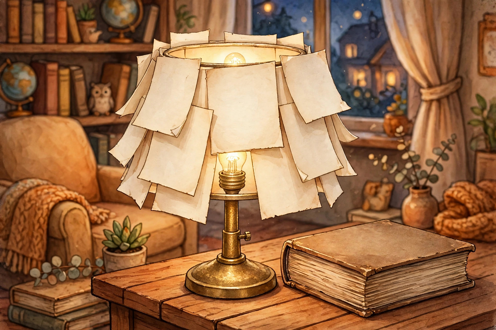

Textbook Page Lampshade: Cover a Shade With the Chapter You Never Read

The popular version of this project goes like this. Tear pages out of an old book, stick them on a lampshade, switch the lamp on, admire the glow. It is a lovely pitch, and it skips the page that matters most, because the finished shade is paper wrapped around a light source. The book page guides are cheerful about the sticking and mostly silent about the bulb. This article works the other way round. Safety rules first, glue second.
Three builds, one honest comparison
There are three documented ways to turn book pages into a shade, and they are not interchangeable. One glues pages onto a shade that already exists. One lines page strips up on a lampshade backing. One hangs whole pages from a frame. A textbook page is heavier and stiffer than a novel page, so the route matters before the first page comes out.
| Build | How it works | Best condition | Watch out for |
|---|---|---|---|
| Decoupage onto an existing shade | Mod Podge goes on one area at a time, a page is placed, flattened, and sealed with more Mod Podge on top | You already own a plain shade that fits the lamp | Pages may not all lay completely flat, which the source treats as part of the vintage finish |
| Pleated strips on a drum backing | Strips of book pages are lined up onto a lamp shade backing, partially unglued at one edge so they fan out, and the top is trimmed with white tape | You want texture and have a drum backing or frame to build on | The documented version specifies pages that are not glossy, so coated textbook pages are out |
| Loose pages on a wire frame | Pages are cut to match the height of the frame sections and attached to a wire lampshade frame with glue dots | You want the pages readable and the build reversible | The documented version pairs the frame with a low watt LED bulb, and one pendant version hangs 40 aged pages |
The decoupage route is the one built out in full below, for a practical reason. It starts from a shade that was made to be a shade, with a proper fitting and a known shape, and it reuses one you may already own. The other two routes remain good builds. They simply ask for a backing or a frame before any page work starts.
Plain page or no shade: the page decision
Plain, matte, uncoated textbook page: use it. The one finish aware lampshade source chose book pages that are not glossy and are a very creamy white, specifically so plenty of light shines through. A matte textbook page is the closest match in the book.
Glossy or coated page, colour plate section: leave it in the book. It fails the documented finish condition, and a coating that blocks the light the source is counting on defeats the point of the shade.
Very thin, brittle page: leave it too. General paper shade guidance warns against thin printer paper because it tears easily and may not withstand heat. A page that crumbles at the fold is in the same category of fragile.
Count the cost before tearing. One documented frame design uses 30 vintage book pages, and a pendant design uses 40 aged pages. A textbook shade is therefore a 30 to 40 page decision, not a two page whim. Pick the chapter accordingly. The dullest 40 pages in the book finally have a job description.
Cover the shade: the decoupage route, step by step
Supplies, from the documented method: an existing lampshade, Mod Podge, pages from a book you can rip and cut, and paint brushes. On costs, checked 2026-11-10 against the source that publishes them: a new lampshade runs $10 to $20 if you buy one, Mod Podge and paintbrushes can be found for less than $5, and used books range from $1 to $20. Reusing a shade you own removes the priciest line from that list.
Step 1: Sort the pages first. Pull only plain matte pages, using the decision above, and set any glossy or coated pages aside in the book. Feature pages are allowed: the method suggests poetry, illustrated pages, and the first pages of a chapter as the engaging choices.
Step 2: Work one area at a time. Brush Mod Podge onto an area of the shade that you will cover immediately. The source is specific on this point, because adhesive applied everywhere at once dries before the later pages arrive.
Step 3: Place and flatten. Lay the page on the glued area, flatten it as much as possible, and push out any bubbles or wrinkles. Whole pages can go on as they are, with overhang trimmed later, or pages can be ripped up for a shabby chic effect.
Step 4: Seal the page. Once a page is flat against the shade, cover it with more Mod Podge. That top coat is what holds the page in place and gives the antique finish the method promises.
Step 5: Finish the edges. Trim pieces that overhang, or fold them under at the lamp lip to hide the edge instead of cutting close to it. Layered overlap is fine. A page corner that sticks up is texture, not failure, on this build.
Step 6: Stop before the bulb. Let the shade dry fully, then run the clearance check below before the lamp is switched on for real. The glue being dry is not the safety test. The measurements are.
The clearance check before it earns a bulb
Paper shade safety guidance is plain about the starting point: use LED bulbs, because paper is highly flammable, and keep the shade at least 2 inches from the bulb to prevent overheating. The same guide's safety summary widens that to a 2 to 3 inch gap between bulb and shade, maintained to prevent fire hazards. Treat 2 inches as the floor and 3 inches as the comfortable end.
Wattage still matters on wider shades. Lampshade safety standards guidance notes that higher wattage bulbs generate greater heat and require more ventilation and larger shades, and it puts a number on one common case: for a 60 watt bulb, at least 75 mm of space between the bulb and the backing of the shade. LED bulbs, the same guidance notes, emit negligible heat compared with other sources, which is why the LED instruction keeps appearing.
Then run the heat check the paper lamp safety guidance describes. Switch the lamp on for five minutes, then feel whether the top of the shade is too hot. If it is, the shade is too narrow. Keep flammable items such as blankets and curtains away from the lamp, respect the highest wattage on the socket's UL rating, and change any bulb that flickers. A shade that passes the tape measure and the five minute check has earned its bulb. A shade that fails either one is a craft project, not a lamp fitting.
What success looks like
A shade covered in matte textbook pages, edges trimmed or folded under, glowing evenly because the pages let light through. A measured gap of 2 to 3 inches between the LED bulb and the paper at the closest point. A top rim that is warm at most after five minutes, never hot. And a textbook that is 30 to 40 dull pages lighter, with its glossiest chapter still safely inside it, nowhere near a light bulb.
, Rex Bennett, Entertainment Writer